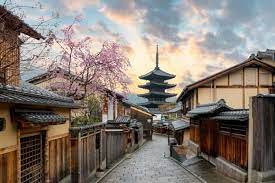

Kyoto - Sagrado e sereno
A cidade dos santuários, jardins e palácios! De todos os principais destinos do Japão, a cidade sagrada de Quioto é um dos melhores lugares para visitar no Japão na primavera, independentemente de você estar de férias com sua família ou seu parceiro. Os icônicos templos, santuários, palácios, jardins e florestas de bambu são um deleite para os olhos, e você não pode perder isso em sua primeira viagem.